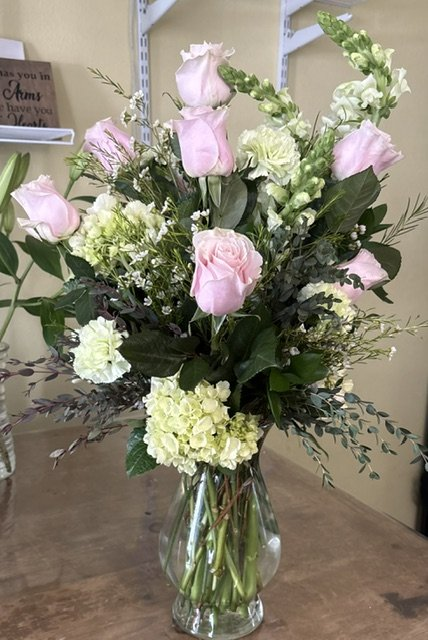
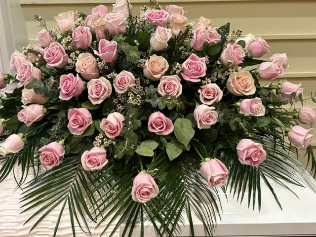
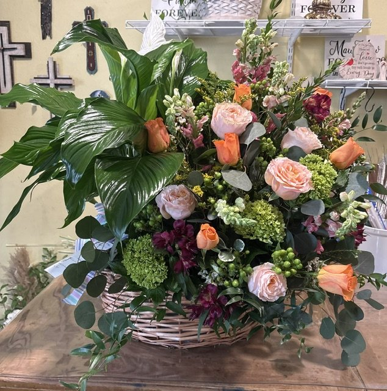

Our Services
More than a flower shop — we're here for every occasion life brings, the joyful ones and the hard ones alike.

Local Delivery
We hand-deliver within 35 miles of Canton to homes, businesses, schools, hospitals, funeral homes, churches, and nearby communities.
- Regular deliveries run 8 AM–5 PM Monday–Friday. Customers may request a specific time, which the shop confirms.
- Same-day delivery is available for orders placed by 2:30 PM Monday–Friday or 10 AM Saturday, subject to flower and route availability.
- Saturday deliveries run during the shop's 8 AM–12 PM hours. Sunday funeral delivery may be available by arrangement.
- $5 in Canton · $10 just out of town · $15 to Wills Point, Grand Saline, Van, Mabank, Martins Mill & Ben Wheeler.
- There is no minimum flower purchase for delivery.
- Every delivery includes a hand-written card message — free. Tips for our drivers are always welcome, never expected.
- If no one answers, we'll try to contact the customer or recipient and leave the order safely when conditions allow. If it cannot be left safely, we'll contact you about the next step.

Weddings
From an intimate courthouse bouquet to full ceremony and reception flowers, we design around your colors, your style, and your budget.
- Free, no-pressure consultations — bring your Pinterest board!
- Bouquets, boutonnieres, corsages, arches, centerpieces, and more.
- Order about one month ahead — a 50% deposit holds your date, with the balance due two weeks before the ceremony. Exceptions possible depending on the size of the order — just ask.

Funeral & Sympathy Flowers
Losing someone is hard enough. We work directly with local funeral homes and handle the details with care, so you don't have to worry about a thing.
- Casket sprays, standing sprays, wreaths, memorial keepsakes, and sympathy arrangements.
- We coordinate delivery timing directly with the funeral home. The normal cutoff applies unless a special arrangement is confirmed.
- Ask about recurring cemetery care. Lisa will confirm dates, placement details, cemetery information, and service availability personally.
- Call us and we'll walk you through the options gently and simply.
We deliver directly to area funeral homes, including:
- Eubanks Funeral Home — Canton
- Mullin-Fuller Funeral Home — Wills Point
- Hiett's Lybrand Funeral Home — Wills Point
- Hilliard Funeral Home — Van
- Bartley Funeral Home — Grand Saline
- Eubank Cedar Creek Funeral Home — Mabank
- Moorhead Funeral Home — Mabank

Custom Arrangements
Our favorite orders start with "I have an idea…" Tell us the occasion, the person, and what you'd like to spend — we'll take it from there.
- Designer's choice arrangements at any budget.
- Silk and dried arrangements available for lasting keepsakes.
- Plants, gift baskets, and add-ons like balloons and chocolates.
Frequently Asked Questions
Can I get flowers delivered today?
Same-day delivery is available for orders placed by 2:30 PM Monday–Friday or 10 AM Saturday, subject to flower and route availability. Deliveries run 8 AM–5 PM Monday–Friday and 8 AM–12 PM Saturday; you may request a specific time for confirmation. Sunday funeral delivery may be available by arrangement. Call or text .
Where do you deliver, and what does it cost?
We deliver up to 35 miles — homes, businesses, schools, hospitals, churches, and funeral homes. Delivery is $5 in Canton, $10 just out of town, and $15 to Wills Point, Grand Saline, Van, Mabank, Martins Mill & Ben Wheeler. There is no minimum flower purchase for delivery. Give us the full address and ZIP code so we can confirm the zone. Tips for our drivers are always welcome, never expected.
What if a flower in the photo isn't available?
Flowers are seasonal, so exact blooms can vary with what's freshest that day. If we need to substitute, we always match the style, color feel, and value of what you ordered — and we'll call you first if it's a big change.
Can I send you a picture of what I want?
Please do. Text inspiration photos to — Pinterest finds, a photo of the dress, or an arrangement you loved. We'll use it as direction and match colors as closely as the season allows.
Do you do silk arrangements?
Yes — silk is one of our specialties. Silk arrangements are beautiful keepsakes for cemeteries, home décor, and anyone who wants their flowers to last.
How far ahead should I book wedding flowers?
Please order about one month in advance — wedding flowers are a custom order we put together with you over the phone. A 50% deposit holds your date, and the balance is due two weeks before the ceremony. Depending on the size of the wedding, we can sometimes work with a shorter timeline — call and we'll tell you honestly what we can do.
How do I order and pay?
Order however you like — fully online (add to cart and check out right on this site), or by phone, text, or in person. When you order online, nothing is charged: we call or text to confirm every detail, then take payment — cash, check, debit and all major credit cards, and Zelle.
Can you keep flowers at a loved one's grave year-round?
Yes — ask about recurring cemetery care. Customers provide the cemetery name and grave-location information. Lisa will confirm available dates, frequency, flowers, pricing, placement details, and service area before anything is scheduled.
How much notice do you need for an order?
We prefer at least 24 hours so we can make sure the flowers you want are in stock — if something isn't available, we'll contact you right away with options. Casket sprays, wreaths and hearts need at least 24 hours; wedding flowers about a month. In a pinch? Call anyway — we love a challenge.
Not Sure What You Need?
That's what we're here for. Call and tell us what's going on — we'll suggest something perfect.